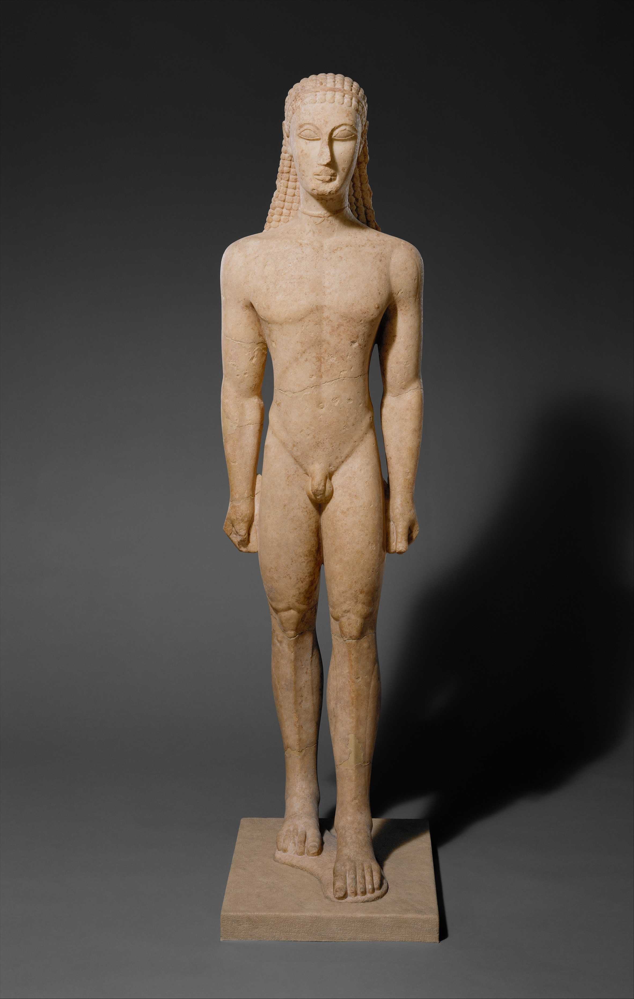
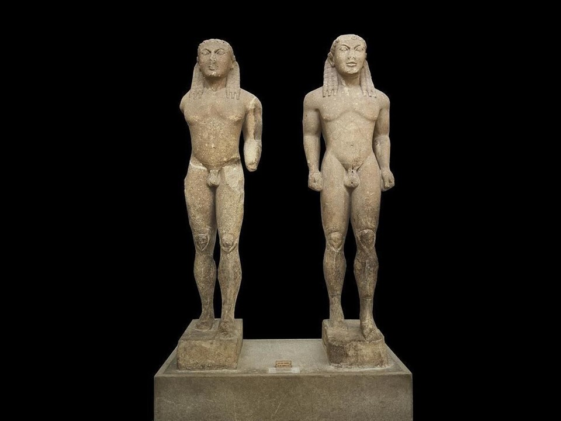
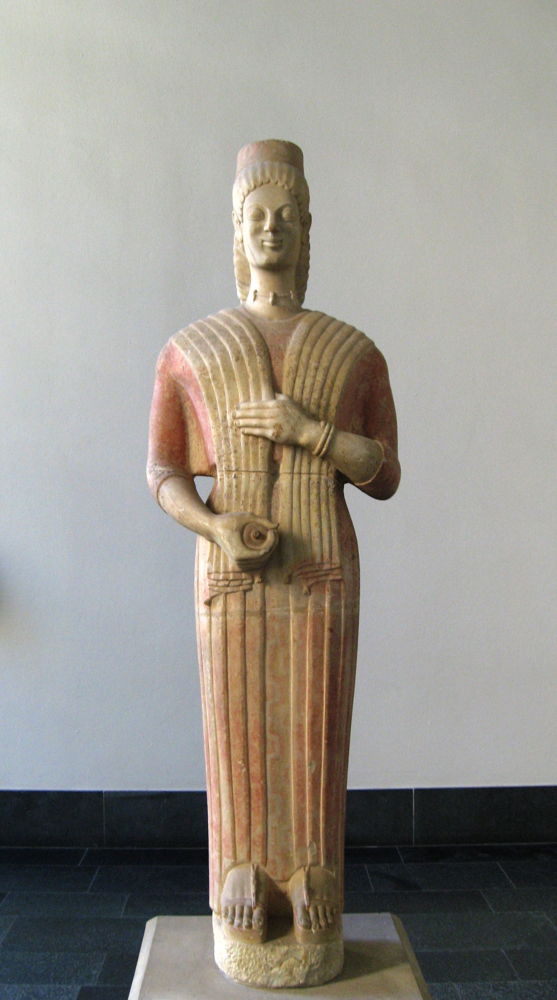
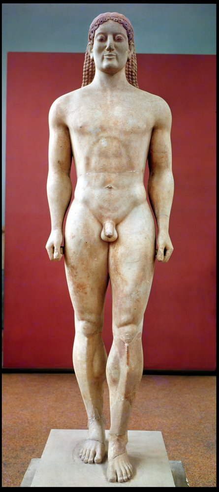
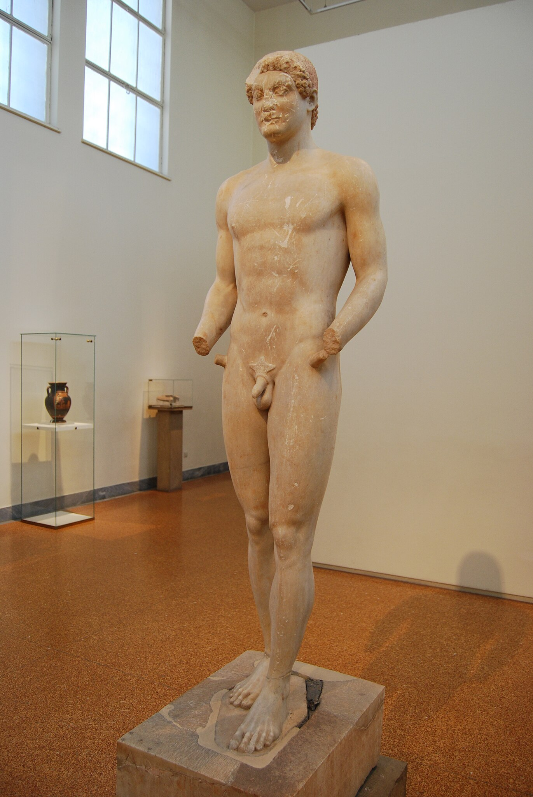

This lesson covers the earliest Greek monumental sculpture - the kouroi (male youth statues) and korai (maiden statues) of the Archaic period (c. 600-480 BCE). You'll learn to identify, describe, analyse, and compare six prescribed sources.
Exam Strategy
These sources are PERFECT for showing development over time. Examiners love questions asking you to trace the evolution from the stiff New York Kouros (c. 600 BCE) to the almost-Classical Aristodikos (c. 500 BCE). That's 100 years of artistic development you can demonstrate!
The Six Prescribed Sources
New York Kouros
c. 600-590 BCE. The earliest - super stiff, Egyptian-influenced. Your baseline for comparison.
Kleobis & Biton
c. 580 BCE. Twin brothers from Argos. Chunky Peloponnesian style. Comes with a brilliant story from Herodotus.
Berlin Standing Goddess
c. 570-560 BCE. Probably a goddess, not a kore. Shows early treatment of female drapery.
Anavysos Kouros (Kroisos)
c. 530 BCE. Much more naturalistic. Has a touching grave inscription. Your key "middle" example.
Peplos Kore
c. 530 BCE. Famous for paint traces. Possibly a goddess. Found on the Acropolis.
Aristodikos Kouros
c. 500 BCE. The last kouros - almost Classical. Short hair, no smile. On the threshold of change.
What ARE Kouroi and Korai?
Kouros (plural: kouroi) literally means "youth" in Greek. These are life-size (or larger) marble statues of nude young men. They follow a strict formula: standing rigidly upright, facing forward, left foot slightly advanced, arms at the sides with fists clenched.
Kore (plural: korai) means "maiden." These are statues of young women, always clothed. They typically hold an offering in one hand while the other grasps their drapery.
Why Always Nude Males but Clothed Females?
Greek men exercised naked in the gymnasium (from gymnos meaning "naked"). Male nudity was associated with athletic excellence. But respectable Greek women were expected to be covered. The first nude female statue - Praxiteles' Aphrodite of Knidos - wouldn't appear until c. 350 BCE!
What Were They For?
Grave markers (sema): Commemorating the dead as eternally young. The Anavysos and Aristodikos kouroi are grave markers.
Votive offerings (anathema): Gifts to the gods. Kleobis and Biton were dedicated at Delphi; the Peplos Kore was found on the Acropolis.
The Egyptian Connection
Early kouroi show strong Egyptian influence: rigid frontal pose, left foot forward, arms at sides, clenched fists, stylised anatomy. BUT key differences: Greek kouroi are nude (Egyptian clothed), freestanding (Egyptian have back pillars), and Greek sculptors progressively moved towards naturalism while Egyptian style remained consistent.
Key Vocabulary You MUST Know
Archaic Smile
The upturned lips on Archaic figures. NOT happiness - probably an attempt to give the face vitality. Disappears in the Severe Style.
Frontality
The figure faces directly forward, designed to be viewed from the front. No twisting or turning.
Polychromy
Greek sculptures were painted in bright colours. The white marble we see today is NOT how they originally looked!
Stylisation
Representing forms in a decorative, pattern-like way rather than realistically. Early kouroi have stylised muscles, hair, and features.
Link to Later Developments
The rigid kouros pose will be revolutionised by contrapposto (weight shift) in the Early Classical period. When you study the Delphic Charioteer and Artemision Zeus (Lesson 2.2), you'll see the Classical sculptors break free from this formula.
c. 600-590 BCE | Naxian marble | Height: 194.6 cm | Metropolitan Museum of Art, New York

The New York Kouros - one of the earliest surviving Greek monumental sculptures. Note the rigid pose, patterned hair, and stylised anatomy.
Description
Analysis
Essay Connections
What You Can See
Pose and Stance
The figure stands rigidly upright in a strictly frontal position. The left foot is placed slightly forward, but there's no sense of walking - both feet are flat, weight distributed evenly. Arms hang straight down, hands clenched into fists. Head faces directly forward.
Anatomy
The body is highly stylised. Anatomical features are indicated by sharp, linear incisions rather than natural modelling:
Torso: Pectorals flat like pads. Division between chest and abdomen is a straight horizontal line.
Groin: Inguinal ligaments form a sharp V-shape - decorative rather than accurate.
Knees: Highly stylised - kneecap as geometric pattern.
Overall: Body assembled from geometric parts rather than one organic whole.
Face
Classic Archaic conventions: large almond-shaped eyes, the characteristic "Archaic smile," stylised ears. Mask-like quality - a generic ideal rather than a portrait.
Hair
Elaborate pattern of bead-like curls, falling symmetrically over the shoulders. Hair treated as decoration - each lock identical, perfectly regular. Resembles an Egyptian wig.
Material
Naxian marble - crystalline white marble from the Cycladic island of Naxos.
Preservation
Assembled from fragments. Head found separately but clearly belongs to it.
Artistic Analysis
The "Four-Sided" Technique
The New York Kouros demonstrates the early Greek (and Egyptian) carving method where the sculptor worked from four separate viewpoints - front, back, and two sides. The figure doesn't fully integrate when viewed from angles.
Technical Process
The sculptor drew the outline on all four sides of a rectangular marble block, then carved inward from each face. This explains the "flat" appearance from corners.
Egyptian Influence
Striking similarities: rigid frontal pose, left foot forward, arms at sides, clenched fists, stylised wig-like hair. Greeks established a trading colony at Naukratis in Egypt around 620 BCE.
Key Differences from Egyptian Sculpture
1. Nudity: Greek kouroi nude; Egyptian figures wear kilts. 2. Freestanding: Greek kouroi independent; Egyptian have back pillars. 3. Development: Greek sculpture evolves; Egyptian remained consistent for millennia.
Don't Say This in an Exam!
"The kouros looks stiff because the Greeks couldn't carve properly yet." WRONG! The stylisation is deliberate, following Egyptian conventions - not incompetence.
Use this source when essays ask about these themes. Each connection includes what to argue and what to compare.
📈
The Development of Naturalism
The Argument
The New York Kouros is your starting point for the journey from stylisation to naturalism. Over 100 years, Greek sculptors moved from flat geometric patterns to organic, lifelike forms - while keeping the same basic pose.
Evidence to Use
Anatomy indicated by incised lines, not modelled volumes
Body assembled from geometric parts, not unified
Pectorals flat like pads; kneecaps as decorative motifs
Four-sided carving technique - doesn't integrate from angles
Greek art didn't develop in isolation. The kouros type shows direct Egyptian influence - but Greeks transformed what they borrowed while Egyptians remained static.
Evidence to Use
Rigid frontal pose, left foot forward - Egyptian conventions
Beaded, wig-like hair resembles Egyptian style
BUT: Greek kouroi are nude; Egyptian clothed
BUT: Greek freestanding; Egyptian have back pillars
Compare With
Kleobis and Biton (similar Egyptian-influenced formula) • Later kouroi show Greek development BEYOND Egyptian models
⚱️
Function and Context
The Argument
Greek sculptures had specific functions in cemeteries and sanctuaries. The frontal pose makes sense for a statue greeting visitors to a grave.
Evidence to Use
Probably a grave marker (sema) or votive offering
Originally outdoors, painted in bright colours
Frontal pose = designed to face approaching visitors
Idealised youth = deceased in eternal, perfected form
Compare With
Anavysos Kouros (grave marker with inscription) • Aristodikos (grave marker) • Kleobis and Biton (votive at Delphi) • Peplos Kore (votive on Acropolis)
👤
Ideal vs Individual
The Argument
This is not a portrait - it's a generic ideal. Early Greek sculpture shows TYPES, not individuals. The tension between ideal and individual runs throughout Greek art.
Evidence to Use
Face is mask-like, generic - not individual features
All early kouroi look essentially the same
Represents the ideal kalos kagathos ("beautiful and good")
No inscription naming a specific individual
Compare With
Anavysos Kouros (named Kroisos but still idealised) • Aristodikos (named, more individual face) • Doryphoros (Classical ideal type)
Kleobis and Biton
c. 580 BCE | Parian marble | Height: 218 cm each | Delphi Archaeological Museum

Kleobis and Biton - the heroic Argive brothers who pulled their mother's cart. Note the massive, powerful build typical of Argive sculpture.
Description
Analysis
Essay Connections
What You Can See
The Pair
Two almost identical kouroi, clearly designed as a pair. Standard kouros formula - frontal stance, left foot forward, arms at sides - but with distinctive characteristics.
Build and Proportions
MASSIVE and muscular - much stockier than the New York Kouros:
Shoulders: Extremely broad and powerful
Chest: Deep, barrel-shaped torso
Thighs: Thick and strong
Overall: Block-like, solid, conveying physical power
This build reflects their story - men strong enough to pull a heavy cart for miles.
Anatomy
Like the New York Kouros, anatomy is stylised with incised lines. Pectorals flat, abdominals indicated by grooves, kneecaps geometric. More emphasis on raw power than elegant patterning.
Faces and Hair
Both display Archaic smile, large almond eyes, stylised features. Faces virtually identical - not individual portraits. Long hair in beaded rows over shoulders.
Signed by the Artist!
The base is inscribed: "[Poly]medes of Argos made us." One of the earliest signed Greek sculptures!
The Story Behind the Statues
Herodotus tells their story in his Histories (1.31):
The Story
Kleobis and Biton were prize-winning athletes from Argos. When their mother, a priestess of Hera, needed to attend a festival but the oxen hadn't arrived, the brothers yoked themselves to her cart and pulled it 8 km. Their mother prayed to Hera to grant them "the best thing for a mortal." After the feast, they lay down in the temple and never woke up - dying at their moment of greatest glory.
Greek Values in the Story
Filial Piety
Devotion to parents was supreme virtue.
Athletic Excellence
Physical strength marked virtue (arete).
Beautiful Death
"Best thing for mortals" = die young at peak of glory.
Context in Herodotus
Herodotus tells this as part of Solon's conversation with King Croesus about who is happiest. The moral: true happiness comes from virtue, not wealth; you can't judge happiness until death.
Argive vs Attic Style
Feature
Argive (Kleobis & Biton)
Attic (New York Kouros)
Build
Heavy, stocky, powerful
Slimmer, more elegant
Proportions
Broad shoulders, thick limbs
More elongated
Emphasis
Physical power, solidity
Pattern, decoration
Essay Connections
Use this source when essays ask about these themes.
📚
Art and Literature
The Argument
Greek art and literature constantly interact. These statues illustrate a story Herodotus records - visual and literary culture inform each other.
Evidence to Use
Herodotus tells their story in Histories 1.31
Story explains why statues were dedicated at Delphi
Massive build matches the story - strong enough to pull cart
Greek sanctuaries were filled with votive offerings displaying both piety AND wealth/status. Art served religious AND political purposes.
Evidence to Use
Dedicated at Delphi - most important Panhellenic sanctuary
Argives honouring their local heroes
Displaying Argive achievement at Panhellenic site
Artist signed the work - reputation mattered
Compare With
Peplos Kore (votive on Acropolis) • Delphic Charioteer (votive from Sicilian tyrant) • Siphnian Treasury at Delphi (architectural votive)
💀
The Ideal Death
The Argument
Greeks believed the best death was young, at peak of glory, before decline. The kouros form - eternally young - embodies this ideal.
Evidence to Use
Hera grants "the best thing for mortals" = peaceful death at glory's peak
Brothers commemorated as eternally young athletes
Same logic as Achilles choosing short glorious life
Kouros form = eternal youth, not realistic aging
Compare With
Anavysos Kouros (Kroisos "destroyed by raging Ares" - heroic death) • Aristodikos (grave marker - eternal youth) • All kouroi show deceased in ideal, not actual, form
🗺️
Regional Variation
The Argument
"Greek art" wasn't monolithic - different regions had distinct traditions. Argive vs Attic style shows local values shaped artistic choices.
Evidence to Use
Argive style: heavy, stocky, emphasis on physical power
Attic style: slimmer, more elegant, decorative
Argos famous for bronze-working and athletic culture
Sculptor Polymedes "of Argos" - regional pride in signature
Compare With
New York Kouros (Attic style) • Anavysos Kouros (Attic) • Later Argive tradition leads to Polykleitos (Doryphoros)
Berlin Standing Goddess (Berlin Kore)
c. 570-560 BCE | Marble | Height: 193 cm | Pergamon Museum, Berlin

The Berlin Standing Goddess - probably representing Hera or Persephone. Note the monumental scale and severe frontality.
Description
Analysis
Essay Connections
What You Can See
Scale and Presence
Monumental figure - at 193 cm, larger than life-size. The scale combined with rigid frontal pose creates divine majesty. She dominates her space.
Pose
Strictly frontal, rigidly symmetrical. Feet together (not one forward like male kouroi). Arms held close to body. One hand may have held a sceptre or offering. Overall effect: hieratic (priestly/divine) stillness.
Dress
Layered garments typical of Archaic female figures:
Chiton: Linen undergarment, visible at neckline
Himation: Heavy woollen cloak over the chiton
Treatment: Drapery as flat, decorative surfaces. Folds indicated by incised lines - geometric patterns, not natural fabric.
Face and Hair
Classic Archaic formula: almond eyes, Archaic smile, stylised features. Serene but distant quality - not quite human. Hair in elaborate waves, symmetrical patterns.
Originally Painted!
Like all Greek sculpture, she was brightly painted. Coloured clothing patterns, dark hair, painted eyes. The white marble goddess is a ghost of her original appearance!
Goddess or Mortal?
Called "Berlin Goddess" because:
Scale: Larger than life-size suggests divine status
Severity: Hieratic pose conveys divine dignity
Context: Likely from a major sanctuary in Attica
Attributes: Originally held something identifying her
Possible identities: Hera (queen of gods), Persephone (queen of underworld), or Athena (if from Acropolis).
Korai vs Goddesses
Regular korai are smaller votives representing mortal maidens. Cult statues of goddesses are larger, more severe, designed to inspire awe. The Berlin figure's scale and solemnity suggest divine representation.
Drapery in Early Archaic Sculpture
Treatment typical of early Archaic work:
Drapery as surface for pattern, not realistic fabric
Folds regular, geometric, decorative
No sense of body beneath clothes
Clothing doesn't respond to gravity or movement
Describing Archaic Drapery
Use: "flat," "linear," "decorative," "geometric," "patterned," "stylised." Say folds are "incised" rather than "modelled." Note "no sense of the body beneath."
Essay Connections
Use this source when essays ask about these themes.
⚤
Male vs Female Representation
The Argument
Greek art treated male and female bodies completely differently, reflecting social norms. Males nude (athletics, warfare); females clothed (modesty). Different artistic challenges created different traditions.
Evidence to Use
Berlin Goddess fully clothed; contemporary kouroi fully nude
Kouros sculptors focused on anatomy; goddess/kore sculptors on drapery
Different poses: kouroi left foot forward; females feet together
Both traditions contribute to Classical sculpture
Compare With
New York Kouros (nude male) • Peplos Kore (clothed female) • Aphrodite of Knidos (first nude goddess - revolutionary) • Doryphoros vs Aphrodite of the Agora
🙏
Cult Images and Worship
The Argument
If this is a cult statue, it shows how Greeks visualised and worshipped gods. The divine was made visible through art. Sculptors shaped how people imagined the gods.
Evidence to Use
Over-life-size scale suggests divine, not mortal
Hieratic pose conveys divine dignity and otherness
Would have stood in temple/sanctuary receiving worship
Lost attribute (sceptre?) would identify specific goddess
Compare With
Peplos Kore (possibly a goddess) • Artemision Zeus (god in action) • Aphrodite of Knidos (cult statue that caused scandal)
👗
Development of Drapery
The Argument
Drapery treatment evolved from flat decorative patterns to naturalistic fabric revealing the body. The Berlin Goddess shows the starting point; later artists made cloth seem to cling and flow.
Evidence to Use
Drapery as flat surface for geometric pattern
Folds incised as lines, not modelled as fabric
No sense of body beneath the clothes
Clothing doesn't respond to gravity or movement
Compare With
Peplos Kore (more sophisticated drapery) • Aphrodite of the Agora ("wet drapery" revealing body) • Parthenon pediment figures (Classical drapery revolution)
👁️
Frontality and Viewing
The Argument
Strict frontality tells us how sculpture was experienced: head-on, like meeting someone's gaze. Creates encounter and presence. Later sculpture invites movement around the figure.
Evidence to Use
Rigidly symmetrical, designed for frontal viewing
Worshipper would approach to face goddess directly
Creates sense of divine encounter, presence
Four-sided carving technique emphasises main view
Compare With
New York Kouros (also rigidly frontal) • Apoxyomenos (designed for multiple viewpoints - contrast) • Diskobolos (primarily frontal despite action)
Anavysos Kouros (Kroisos)
c. 530 BCE | Marble | Height: 194 cm | National Archaeological Museum, Athens

The Anavysos Kouros (Kroisos) - showing major developments in naturalism while retaining the kouros formula. Your key "middle" example.
Description
Analysis
Essay Connections
What You Can See
Pose
Same basic kouros formula: frontal, left foot forward, arms at sides. BUT the figure seems more relaxed, more like a person standing rather than a carved pattern.
Anatomy - The Big Change
This is where the Anavysos Kouros shines. Compare to the New York Kouros:
Torso
Muscles MODELLED as swelling volumes, not incised lines. Pectorals curve outward. Abdomen has real depth. Ribcage sensed beneath.
Limbs
Understanding of underlying bone and muscle structure. Thighs swell and taper naturally.
Integration
Body reads as ONE organic whole, not assembled geometric parts. Sculptor understands how muscle groups connect.
Surface
Suggests flesh over muscle over bone - sense of organic layers.
Face
Still has Archaic smile, but features softer, fleshier. Face feels more individual, less mask-like. Almost a sense of personality.
Hair
Still beaded rows over shoulders - decorative and patterned. Hair more conservative than body - sculptors developed anatomy faster than they changed formulaic hair.
The Inscription
The base carried a painted inscription: "Stay and mourn at the tomb of dead Kroisos, whom raging Ares destroyed one day as he fought in the foremost ranks." This tells us: his name was Kroisos, he died in battle heroically, the statue marks his grave.
The Development Revolution
Made roughly 60-70 years after the New York Kouros. Extraordinary progress in understanding the human body:
Feature
New York Kouros (c. 600)
Anavysos Kouros (c. 530)
Muscles
Indicated by incised lines
Modelled as 3D volumes
Torso
Flat, pattern-like
Organic, with real depth
Integration
Body as assembled parts
Body as unified whole
Surface
Decorative
Suggests flesh and bone
Face
Mask-like, generic
Softer, more individual
The Perfect Comparison Pair
New York → Anavysos is your GO-TO comparison for Archaic development. Same type, 70 years apart, dramatic improvement. Memorise: incised vs modelled muscles, pattern vs organic form, assembled parts vs unified whole.
What Stayed the Same
Despite the revolution, Anavysos retains Archaic features: rigid frontal pose, left foot forward, even weight distribution, Archaic smile (though softer), patterned hair.
Why the Formula Persisted
The kouros type was respected with established meanings: youth, virtue, athletic excellence. Patrons wanted kouroi that looked like kouroi. Innovation happened within the formula; breaking it required cultural as well as artistic shift.
Why "Kroisos"?
Kroisos (Croesus) was also the famously wealthy king of Lydia! This Athenian family clearly liked the name - naming your son after a legendary rich king was a statement of aspiration.
Essay Connections
Use this source when essays ask about these themes.
📈
The Drive Towards Naturalism
The Argument
KEY evidence for Greek pursuit of naturalism. Within 70 years, sculptors moved from flat patterns to organic modelling. Reflects Greek cultural values: observation, inquiry, belief that nature can be understood and represented.
Evidence to Use
Muscles modelled as swelling volumes, not incised lines
Body unified and organic, not assembled from parts
Sense of flesh over muscle over bone
Face softer, more individual than earlier kouroi
BUT: still retains Archaic pose, smile, hair
Compare With
New York Kouros (70 years earlier - flat, patterned) • Aristodikos (30 years later - maximum naturalism) • Delphic Charioteer (Early Classical - next stage) • Doryphoros (High Classical ideal)
⚔️
Death and Commemoration
The Argument
Greek funerary art shows the deceased in ideal form, not as old or dying. The kouros commemorates Kroisos as eternally young - death transcended through art.
Evidence to Use
Inscription: "whom raging Ares destroyed... in the foremost ranks"
Heroic death in battle - highest Greek ideal
Statue shows idealised youth, not actual appearance
Frozen at moment of greatest glory, before decline
Compare With
Kleobis and Biton (ideal death at peak of glory) • Aristodikos (grave marker, similar idealisation) • New York Kouros (probably grave marker)
🔄
Convention vs Innovation
The Argument
Shows innovation WITHIN convention. Brilliantly inventive in anatomy, conservative in pose. Greek art develops through tension: pushing boundaries while respecting tradition.
Evidence to Use
Revolutionary anatomy: modelled, organic, unified
Conservative pose: frontal, left foot forward, arms at sides
Archaic smile and patterned hair retained
Patrons wanted recognisable kouros type
Compare With
Aristodikos (pushes formula to limit) • Delphic Charioteer (contrapposto introduced) • Doryphoros (new Classical formula)
👤
Individual vs Type
The Argument
Kroisos is named with a personal story, but his statue remains an idealised type, not a portrait. Tension between celebrating individuals and representing ideals runs throughout Greek art.
Evidence to Use
Named individual with specific death story
But statue shows ideal youth, not actual features
Moving toward individual commemoration
Still far from true portraiture
Compare With
New York Kouros (no name, pure type) • Aristodikos (named, face more individual) • Doryphoros (ideal type, not portrait)
Peplos Kore
c. 530 BCE | Marble with paint traces | Height: 117 cm | Acropolis Museum, Athens
The Peplos Kore - famous for surviving paint traces. Found on the Athenian Acropolis, possibly representing a goddess.
Description
Analysis
Essay Connections
What You Can See
The Name
Called "Peplos Kore" because she appears to wear a peplos - simple, heavy woollen garment pinned at shoulders. BUT recent scholarship suggests this might be wrong (see Analysis tab).
Pose
Standing frontally with feet together. Arms more active than earlier female figures: left arm extended forward (originally held offering), right arm bent grasping drapery. Creates more visual interest than rigid-armed Berlin Goddess.
Dress
Heavy peplos falling in simple, columnar folds. Distinctive apoptygma (overfold) at top. Treatment still somewhat flat but more sophisticated than Berlin Goddess.
Face and Hair
Strong Archaic smile, almond eyes, rounded cheeks. Warmth and vitality in expression. Hair elaborately arranged with traces of red paint visible.
The Colours!
Remarkable traces of original paint: Red on lips, hair ornaments, clothing borders. Elaborate patterns on the "peplos." Eyes with painted pupils, irises, eyelashes. Crucial evidence for Greek polychromy.
The Paint Changes Everything
Paint traces suggest something MORE elaborate than a simple peplos: elaborate geometric and animal patterns, multiple colours (red, yellow, blue), designs for luxurious garment.
Goddess, Not Maiden?
Some scholars argue she represents a goddess. Elaborate painted costume, dignified pose, missing attribute suggest divine status. Possibly Artemis or Athena. "Peplos Kore" may be a misnomer.
Context: The Acropolis
Found in debris from Persian destruction of 480 BCE. Athenians buried this "Perserschutt" and built new temples on top. This burial preserved many Archaic sculptures.
The Acropolis Korai
Dozens of korai found buried on the Acropolis - votive offerings to Athena. The Peplos Kore is just the most famous.
Essay Connections
Use this source when essays ask about these themes.
🎨
Polychromy - Greek Sculpture Was COLOURED
The Argument
Essential evidence that Greek sculptures were brightly painted. The white marble aesthetic is an accident of preservation. Changes how we understand ALL Greek sculpture.
Evidence to Use
Red paint traces on lips, hair ornaments, clothing borders
Elaborate painted patterns on the "peplos"
Eyes originally had painted pupils, irises, eyelashes
Multiple colours: red, yellow, blue traces found
Compare With
Berlin Standing Goddess (would have been painted) • All Archaic kouroi (painted eyes, hair, lips) • Parthenon sculptures (paint traces survive)
🏛️
Votive Practice on the Acropolis
The Argument
Wealthy Athenians dedicated korai to Athena - displaying piety and resources. Art served religious AND social purposes.
Evidence to Use
Found on Acropolis - Athena's sanctuary
Dozens of korai found in Perserschutt
High quality suggests wealthy patron
Extended hand originally held offering
Compare With
Kleobis and Biton (votive at Delphi) • Berlin Standing Goddess (cult image?) • Delphic Charioteer (votive from Sicilian tyrant)
⚔️
The Persian Wars as Turning Point
The Argument
Buried after Persian sack of 480 BCE. This destruction marks a watershed: Archaic Athens ended, Classical Athens began.
Evidence to Use
Found in Perserschutt - Persian destruction debris
Persians destroyed Archaic Acropolis in 480 BCE
Athenians buried damaged sculptures, built new temples
Persian Wars = cultural as well as political watershed
New evidence changes interpretation. Scholars thought she wore a simple peplos; paint analysis suggests elaborate costume - possibly a goddess. Our understanding is always provisional.
Evidence to Use
Name "Peplos Kore" based on unpainted appearance
Paint analysis reveals elaborate costume
May represent goddess (Artemis? Athena?)
New techniques reveal new truths
Compare With
Berlin Standing Goddess (identity debated) • Artemision Zeus (Zeus or Poseidon?) • Hermes and Dionysus (original or copy?)
Aristodikos Kouros
c. 500 BCE | Marble | Height: 195 cm | National Archaeological Museum, Athens

The Aristodikos Kouros - the last great kouros, on the threshold of the Classical revolution. Note the short hair and serious expression.
Description
Analysis
Essay Connections
What You Can See
Overall Impression
Looks more "modern" than earlier kouroi. Restraint, seriousness, naturalism that feels different. A kouros on the verge of becoming something new.
Pose
Still kouros formula: frontal, left foot forward, arms at sides. BUT feels less rigid, more naturally balanced. (Still no true weight shift - contrapposto yet to come.)
Anatomy
Highly sophisticated naturalism - as good as or better than Anavysos:
Fully modelled musculature throughout
Subtle transitions between muscle groups
Convincing sense of flesh over bone
Organic, unified body - completely integrated
Face - The Big Change
This is where Aristodikos breaks new ground:
Serious: No Archaic smile - or barely a trace
Contemplative: Thoughtful, almost melancholic expression
Natural: Less stylised, more realistic features
Hair - The Other Big Change
Gone are the elaborate beaded locks! Short, cap-like hair in simple naturalistic waves. Dramatic break from 100 years of convention - anticipates Severe Style and Classical period.
Named Individual
Like Kroisos, Aristodikos is named - this was his grave marker. He was probably a young Athenian aristocrat who died around 500 BCE, just before the Persian Wars. His statue marks the end of an era.
The End of an Era
Made around 500 BCE - almost exactly 100 years after the New York Kouros. In that century, Greek sculptors had mastered naturalistic anatomy, integrated the body organically, developed lifelike modelling, and begun abandoning stylised features. What they HADN'T done was break the frontal pose. That would come with the Kritios Boy (c. 480 BCE).
Perfect Transition Figure
Aristodikos is ideal for Archaic-to-Classical essays. Retains kouros POSE (frontal, left foot forward) while abandoning Archaic FEATURES (smile, patterned hair). Maximum naturalism within the old formula - next step required breaking it.
Retained vs Abandoned
Retained (Still Archaic)
Abandoned (Proto-Classical)
Frontal pose
Archaic smile
Left foot forward
Elaborately patterned hair
Even weight distribution
Stylised features
Rigid symmetry
Mask-like face
Common Mistake
Don't say Aristodikos "shows contrapposto" or "has weight shift." He doesn't - both feet flat, weight even. He's the LAST kouros, not the FIRST Classical figure. Contrapposto comes later.
Why the Changes?
Why did Archaic smile disappear? Why short hair? Theories include: changing taste, pursuit of naturalism (real men don't grin with elaborate wigs), new sober cultural mood after Persian Wars, athletic culture (short hair practical).
Essay Connections
Use this source when essays ask about these themes.
🔄
Evolution Within Convention
The Argument
Aristodikos pushes the kouros type to its absolute limit - maximum naturalism while maintaining frontal pose. Greek art developed through innovation within tradition until old forms couldn't contain new ideas.
Evidence to Use
Maximum naturalism in anatomy - fully modelled, organic
BUT retains frontal pose, left foot forward, arms at sides
Archaic smile abandoned, short hair introduced
Next generation breaks formula entirely (contrapposto)
Compare With
New York Kouros (same formula, 100 years earlier) • Anavysos Kouros (intermediate stage) • Delphic Charioteer (post-formula, Early Classical) • Doryphoros (new Classical formula)
😐
From Ethos to Pathos (The Beginning)
The Argument
Serious expression hints at shift from Archaic cheerful vitality to Classical grave dignity (ethos). The smile disappears; restraint replaces decorative charm. Anticipates Severe Style's sober mood.
Evidence to Use
No Archaic smile - or barely a trace
Thoughtful, almost melancholic expression
Simple short hair replaces elaborate decoration
Overall effect is sober, dignified, serious
Compare With
Anavysos Kouros (still has Archaic smile) • Delphic Charioteer (full Severe Style seriousness) • Doryphoros (Classical ethos) • Apoxyomenos (later, more relaxed)
⚔️
The Persian Wars Watershed
The Argument
Aristodikos died around 500 BCE - just before Persian invasions. After the wars, Greek art changed dramatically. He represents the last moment of the old world, preserved just before everything changed.
Evidence to Use
Dated c. 500 BCE - decade before Persian Wars
Still uses kouros formula (soon abandoned)
Post-war art = Severe Style, then High Classical
Cultural trauma may explain shift to seriousness
Compare With
Peplos Kore (buried in Persian destruction) • Delphic Charioteer (474 BCE - post-war) • Artemision Zeus (Severe Style)
♾️
Continuity of Function
The Argument
Despite 100 years of stylistic change, Aristodikos serves the same function as earliest kouroi: grave marker commemorating young man in ideal, eternal form. Style evolved but meaning remained.
Evidence to Use
Grave marker for named individual (Aristodikos)
Same function as New York Kouros, Anavysos Kouros
Still shows idealised youth, not portrait
Still transcends death through eternal beauty
Compare With
New York Kouros (same function, 100 years earlier) • Anavysos Kouros (grave marker, named Kroisos) • Kleobis and Biton (votive function - different but parallel)
Thematic Overview: Connecting Everything
Now that you know all six sources in detail, here's how to think about them thematically - the way examiners want you to think.
Theme 1: The Development of Naturalism
This is THE big story of Archaic sculpture. Use these sources to trace it:
Starting point (c. 600): New York Kouros - flat, linear, pattern-like anatomy. Egyptian influence. Four-sided composition. Body as assembled geometric parts.
Middle point (c. 530): Anavysos Kouros - modelled, organic anatomy. Muscles swell convincingly. Body as unified whole. BUT still Archaic pose, smile, hair.
End point (c. 500): Aristodikos - fully naturalistic body AND face. Short hair, serious expression. Maximum naturalism within the kouros formula.
Essay Gold
Any question about "development" or "change" in Archaic sculpture can be answered with New York → Anavysos → Aristodikos. Memorise specific comparison points for each pair.
Theme 2: Function and Context
These sculptures weren't made for museums. Understand their purposes:
Grave Markers
New York Kouros (probably), Anavysos Kouros (Kroisos), Aristodikos. Commemorated the dead as eternally young.
Votive Offerings
Kleobis & Biton (at Delphi), Peplos Kore (on Acropolis). Gifts to the gods displaying piety and wealth.
Cult Images
Berlin Goddess (probably). Divine representation in a sanctuary, receiving worship.
Theme 3: Ideal vs Individual
Early Greek sculpture shows TYPES, not portraits:
All kouroi look similar - ideal of male youth, not specific people
Even named individuals (Kroisos, Aristodikos) shown as idealised types
True portraiture won't emerge until the Hellenistic period
Greek interest was in perfect, universal beauty - not individual peculiarities
Theme 4: Male vs Female Representation
Male Figures (Kouroi)
Female Figures (Korai/Goddesses)
Always nude
Always clothed
Focus on anatomy
Focus on drapery
Left foot forward
Feet together
Grave markers + votives
Mainly votives (Acropolis korai)
These differences reflect Greek gender conventions and created different artistic challenges for sculptors.
Theme 5: Regional Variation
Greek art wasn't monolithic. Compare:
Attic style (New York Kouros, Anavysos, Aristodikos): More elegant, slimmer proportions
Argive style (Kleobis & Biton): Heavier, more muscular, emphasis on power
Different regions had different traditions, reflecting local values and artistic schools.
Theme 6: Polychromy
NEVER forget: these sculptures were painted!
The Peplos Kore preserves crucial paint evidence
All marble sculptures had painted eyes, hair, lips, clothing patterns
The white marble aesthetic is an accident of preservation
Understanding polychromy changes how we interpret Greek sculpture
Quick Reference: Source Summary
Source
Date
Key Points
New York Kouros
c. 600 BCE
Earliest. Egyptian influence. Flat, patterned. Your baseline.
Kleobis & Biton
c. 580 BCE
Argive style. Massive. Herodotus story. Signed by Polymedes.
Berlin Goddess
c. 570-560 BCE
Probably goddess. Early drapery. Monumental scale.
Anavysos Kouros
c. 530 BCE
Major leap. Named (Kroisos). Grave marker. "Middle" example.
Peplos Kore
c. 530 BCE
Paint traces! Possibly goddess. Acropolis.
Aristodikos
c. 500 BCE
Last kouros. Short hair, no smile. Threshold of Classical.